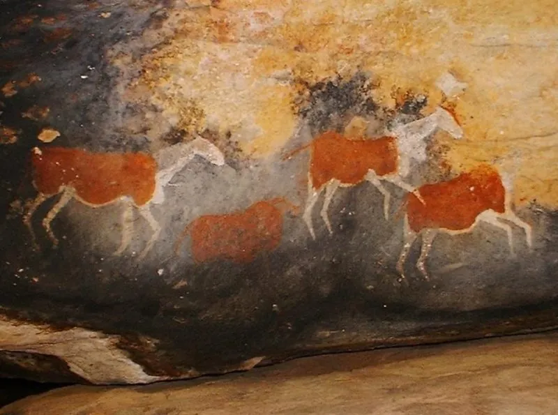

哺乳动物 · 动物界
大羚羊 Taurotragus oryx

非洲体型最大的羚羊之一，雄性颈部有黑色鬃毛、喉部有垂肉，雌雄都长有螺旋角，善于奔跑跳跃，可被驯养。
- 分类
- 门脊索动物门纲哺乳纲目偶蹄目科牛科属大羚羊属
- 栖息环境
- 非洲东部和南部的稀树草原、灌丛与山地
- 地理分布
- 肯尼亚、坦桑尼亚、南非等非洲东部和南部国家
- 保护级别
- IUCN 无危（LC）
物种志
大羚羊体长 2.0–2.8 米，肩高 1.3–1.8 米，体重 300–900 kg，雄性大于雌性，是非洲最大的羚羊之一。它的被毛为浅黄褐至灰褐色，雄性颈部有黑色鬃毛，喉部有下垂的肉垂；雌雄都长有螺旋状角，角长可达 60–120 cm，身体粗壮。
大羚羊分布于非洲东部和南部的稀树草原、灌丛和山地，从肯尼亚、坦桑尼亚到南非。它以草、树叶、灌木和果实为食，结成 10–30 只的群体，雄性之间通过角力争夺地位。大羚羊善于奔跑和跳跃，能跳过 2 米多高的障碍，性情相对温和，部分非洲地区尝试将其驯养以获取肉奶。雌性妊娠期约 8–9 个月，每胎 1 仔。大羚羊种群总体稳定，被列为无危。
形态与习性
- 食性草、树叶、灌木与果实
- 体长2.0–2.8 m，肩高 1.3–1.8 m
- 体重300–900 kg，雄性大于雌性
- 寿命野外约 15–20 年
- 繁殖妊娠期约 8–9 个月，每胎 1 仔
- 角雌雄都长螺旋角，长可达 60–120 cm
- 跳跃能跳过 2 m 多高的障碍
趣味知识
- 大羚羊是非洲最大的羚羊之一，雄性体重可达 900 kg。
- 雌雄都长有螺旋状角，雄性的角更粗大。
- 大羚羊能跳过 2 米多高的障碍，奔跑能力出众。
- 部分地区尝试驯养大羚羊，以获取肉和奶。